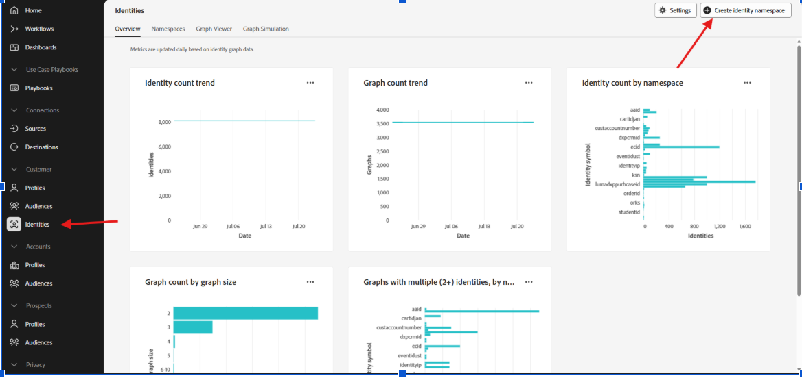

AEP Identity
Identity is one of the most important concepts in Adobe Experience Platform. It helps AEP understand that different identifiers can belong to the same person, device, account or other entity.
A customer can interact with different systems using different identifiers. AEP uses identity information and identity relationships to connect those identifiers.
1. What is an Identity?
An identity represents an identifiable person, device, account or other entity across different systems.
A customer may interact with an organization through multiple identifiers.
Customer ID → CUST10001
Email → customer@example.com
Mobile → 9876543210
CRM ID → CRM78901
These identifiers may come from different systems, but they can represent the same customer when the appropriate identity relationships are available.
2. What is an Identity Namespace?
An Identity Namespace provides context for an identity value. It tells AEP what type of identifier the value represents.
| Namespace | Identity Value |
|---|---|
| customer@example.com | |
| Phone | 9876543210 |
| Customer ID | CUST10001 |
| CRM ID | CRM78901 |
Identity Value + Identity Namespace = Identity context
3. Identity vs Identity Namespace
| Concept | Meaning | Example |
|---|---|---|
| Identity | The actual identifier value | CUST10001 |
| Identity Namespace | Defines the type or context of the identifier | Customer ID |
| Identity Value | The actual value supplied by the source | customer@example.com |
Namespace → Email
Identity Value → customer@example.com
Namespace → Customer ID
Identity Value → CUST10001
4. Identity in Adobe Experience Platform
AEP provides an Identities area where identity information can be viewed and identity namespaces can be created.
The Identites area provides views such as:
- Overview
- Namespaces
- Graph Viewer
- Graph Simulation
The Overview screen also provides identity and identity graph information.

AEP → Identities → Overview
5. Creating an Identity Namespace
A custom identity namespace can be created from the Create identity namespace option.

Create identity namespace screen in AEP
6. Create Identity Namespace – Fields
The Create identity namespace screen contains several important fields.
| Field | Purpose | Example from training |
|---|---|---|
| Display name | Human-readable name of the identity namespace. | Re Customer ID |
| Identity symbol | A unique symbol used to identify the namespace. | recustomerid |
| Description | Describes the purpose of the identity namespace. | This identity is created for Reliance Org customer. |
| Identity type | Defines the type of identifier represented by the namespace. | Individual cross-device ID |
Display name → Re Customer ID
Identity symbol → recustomerid
Description → This identity is created for Reliance Org customer.
Identity type → Individual cross-device ID
7. Identity Type
When creating an identity namespace, AEP allows the appropriate identity type to be selected.
The screen shown in the training session includes the following examples:
| Identity Type | Purpose |
|---|---|
| Cookie ID | Identifies web browsers. |
| Individual cross-device ID | Represents an individual identifier such as a CRM ID or Login ID. |
| Hardware device ID | Identifies hardware devices such as IDFA or GAID. |
| Non-people identifiers | Identifiers that are not connected to a person graph, such as a product SKU. |
| Email addresses can be used as identities. | |
| Phone number | Phone numbers can be used as identities. |
8. Individual Cross-Device ID
The training screenshot shows Individual cross-device ID as one of the identity type options.
This type can represent an individual identifier such as:
- CRM ID
- Login ID
- Customer ID
Customer ID → CUST10001
Namespace → Re Customer ID
Identity Type → Individual cross-device ID
9. Identity Namespace Example – Re Customer ID
During the training session, an example custom identity namespace was created for a customer identifier.
Display Name: Re Customer ID
Identity Symbol: recustomerid
Description: This identity is created for Reliance Org customer.
Identity Type: Individual cross-device ID
The identity symbol is the technical identifier for the namespace, while the display name is the human-readable name shown in the interface.
10. Identity Example
↓ customer@example.com
Customer ID Namespace
↓ CUST10001
CRM ID Namespace
↓ CRM78901
Each value has a namespace that provides context about what the identifier represents.
11. Identity Graph
The Identity Graph represents relationships between identities. It can connect identifiers that are associated with the same customer or entity.
↓ Customer
↑
Customer ID
↑
CRM ID
↑
Mobile
The graph provides a way to understand relationships between different identifiers.
12. Tata / Croma Example
Consider a Tata ecosystem containing different businesses such as Croma, Tata Motors and Tata Insurance. A customer may interact with different Tata businesses using different identifiers.
Croma → customer@example.com
Tata Motors → CRM78901
Tata Insurance → 9876543210
Common Customer ID → CUST10001
13. Identity in an XDM Schema
Identity information is also connected with the XDM data model. An XDM field can be configured to participate in identity handling when the data model and use case require it.
Customer ID
Type → String
Identity → Yes
Identity Namespace → Customer ID
For example, a Customer ID field or Email field may be configured as an identity field for the appropriate schema use case.
14. Primary Identity
A primary identity can be designated for a record when defining the identity behavior of a schema.
Customer ID = CUST10001
Namespace = Customer ID
Primary Identity = Yes
15. Identity Resolution
Identity resolution is the process of determining relationships between different identity values so that information from different sources can be connected.
Identity resolution is important when a customer interacts with an organization through multiple systems and identifiers.
16. Why Identity is Important in AEP
- Connects customer information from different systems.
- Supports unified customer profiles.
- Helps connect online and offline interactions.
- Supports customer journey analysis.
- Can support segmentation and activation use cases.
- Helps understand relationships between identifiers.
17. Developer View
As an AEP developer, it is important to understand how identity information moves from source data into XDM, datasets and customer profiles.
This gives a developer a high-level view of where identity fits into the AEP data flow.
18. Simple End-to-End Example
Customer ID = CUST10001
Email = customer@example.com
Phone = 9876543210
↓
XDM Schema
Identity fields are defined according to the business requirement.
↓
Dataset
Data is ingested into the dataset.
↓
Identity Graph
Identity relationships can be represented.
↓
Customer Profile
Customer information can contribute to the profile when the relevant Profile and identity configuration requirements are met.
19. Identity vs Identity Namespace – Quick Revision
| Question | Answer |
|---|---|
| What is Identity? | An identifier representing a person, device, account or other entity. |
| What is Identity Value? | The actual identifier value. |
| What is Identity Namespace? | It provides context for the identifier. |
| What is Identity Symbol? | The unique symbol used for an identity namespace. |
| What is Identity Graph? | It represents relationships between identities. |
| What is Identity Resolution? | Connecting related identity information across sources. |
20. Interview Questions
What is an identity in AEP?
An identity is an identifier representing a person, device, account or other entity.
What is an identity namespace?
An identity namespace provides context for an identity value, such as Email, Phone or a Customer ID.
What is the difference between identity and identity namespace?
The identity is the identifier value, while the namespace provides the context or type of that identifier.
What is an identity symbol?
The identity symbol is the unique symbol used to identify an identity namespace.
What is an identity graph?
An identity graph represents relationships between identity values.
Why is identity important in AEP?
Identity helps connect information from different sources when the identifiers represent the same customer or entity.
What is a primary identity?
A primary identity is the identity designated as the primary identifier for a record according to the schema configuration.
21. Quick Revision
Identity Value → The actual identifier.
Identity Namespace → What type or context does the identifier have?
Identity Symbol → Unique symbol for the namespace.
Identity Type → Defines the type of identifier represented.
Identity Graph → How are identities related?
Identity Resolution → Connecting related identities.